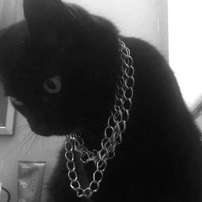
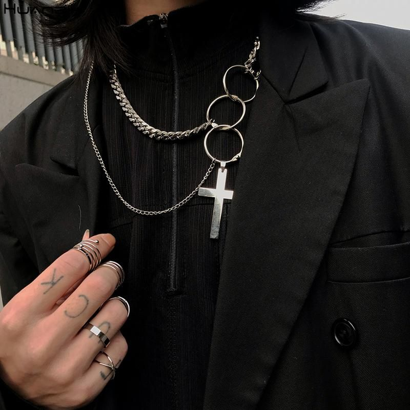

Ce este gothcore?
Gothcore este o estetică care implică temele și caracteristicile esteticului goth, cu estetica Metalcore introdusă.
Gothcore este o fuziune de rock gotic (sau metal gotic) și hardcore punk (sau metalcore). |
Elementele:
Îmbrăcăminte neagră în principal, urmată de accesorii și bijuterii gotice, dacă persoana decide să le folosească. Uneori gothicul e însoțit de energetice, pentagrame, lanțuri.
|
Look-ul gothcore presupune: Moda Gothcore ia moda Goth și o combină cu aspectul Metalcore. Jeans skinny negri și tricou negru e cea mai simplă alegere vestimentară. Opțional, se poartă machiaj pal, ochi negri sau creion de ochi. Pentru un aspect feminin, Misa Amane și pentru bărbați Ryuk Shinigami de la Death Note sunt figuri de inspirație pentru un aspect Gothcore. Se fac combinații cu corsete, dantele, lanțuri și mănuși, tricouri cu tematică de bandă gotică sau doar tricouri obișnuite inspirate de goth, pantofi cu platformă. | |
|  |  |